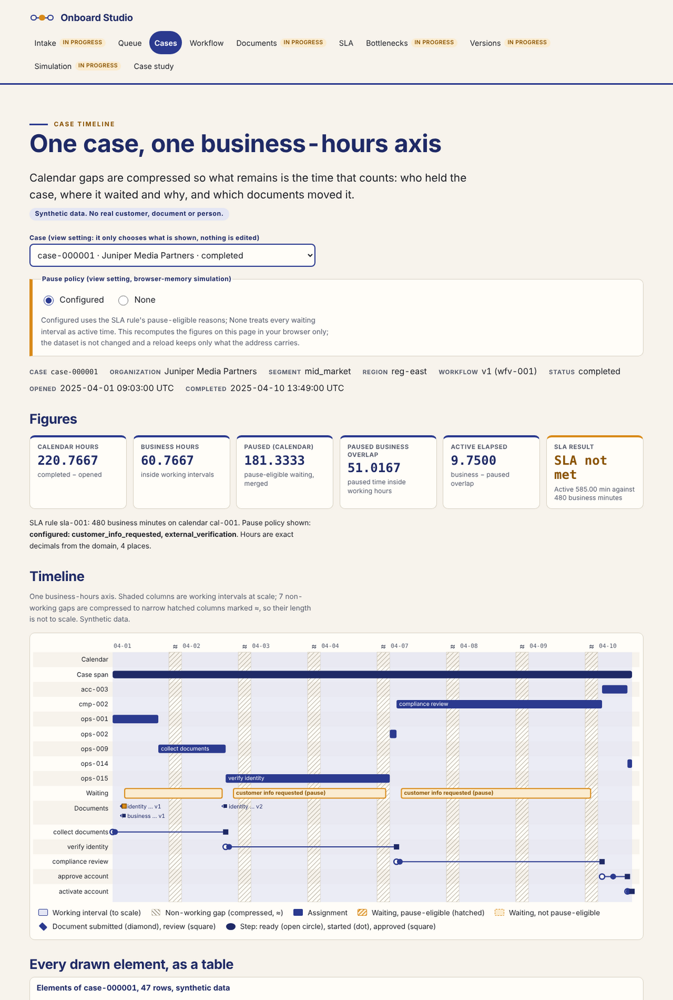
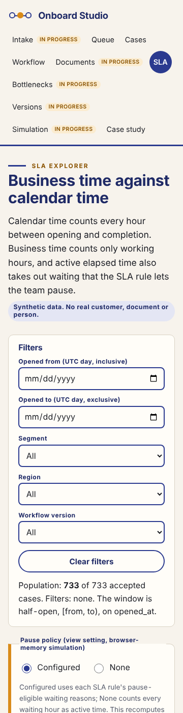

[ Work ]Dashboard · Business systems analysis · FastAPI · ReactCase 222 / 236
Which Onboarding Workflow Should Be Adopted, and How Should Exceptions Be Handled?
Onboard Studio: a case timeline on a business-hours axis. Cases bound to immutable workflow versions, dependency-ordered steps, append-only document versions, independent approvals, working calendars with holidays, pause policies and SLA attainment on active elapsed time. One contract in Python (verified on PostgreSQL in GitHub Actions) and TypeScript (the static demo), both checked against a hand-calculated fixture. Synthetic data; project 02 of the Business Data Lab.
What needed answering
Onboarding reviews argue from calendar time: a case opened on Friday afternoon and finished Monday morning "took three days". Customer waiting is counted as employee work, waiting history is lost when a case is reassigned, and the workflow template is edited while cases are open, so two versions cannot be compared on the same terms.
Onboard Studio defines the time arithmetic first. Every duration is computed on a working calendar with explicit timezone and holidays; customer waiting is a pause with a configured, versioned reason; a case binds one immutable workflow version; and the timeline, the SLA explorer and the version comparison all read the same numbers.
The build
Two implementations of one contract, checked against a hand calculation and each other.
- The contract: half-open calendar intervals, holidays subtracted (a weekend holiday subtracts nothing), pauses clipped and merged, active elapsed as business time minus pause-eligible overlap, SLA on active time, backlog as-of a cutoff, rates from aggregated numerators and denominators.
- A known-answer fixture written first: a case opened Friday 16:00 and completed Monday 10:00 is 66 calendar hours, 2 business hours, and 1 active hour when the Friday 16:30 to Monday 09:30 customer wait is pause-eligible (2 when it is not). A standard-library script reproduces it from the records.
- The Python domain, PostgreSQL schema and FastAPI commands: publish a version only without dependency cycles; create a case on a published version; submit, reject and resubmit documents as append-only versions; unlock steps only when prerequisites are approved; approve only by a reviewer with the right role who is not an assignee; pause only for configured reasons; complete only with every required step and document satisfied; never reopen.
- The static site: the same contract in TypeScript on integer milliseconds, a case timeline on a business-hours axis, the workflow canvas with an accessible ordered list, the SLA explorer with a pause-policy view toggle and CSV export, a work queue and a case study.
Step by step
- Step 01
Count the hours that count
The fixture's 66 calendar hours contain two working hours: Friday 16:00 to 17:00 and Monday 09:00 to 10:00. The customer wait from Friday 16:30 to Monday 09:30 overlaps exactly one of them, so the case was actively worked for one hour. The SLA of 480 business minutes is judged on that hour.
- Step 02
Exact arithmetic, then rounding once
Both implementations keep durations as exact integers (milliseconds in the browser, rational seconds in Python) and round only when printing four decimals. The TypeScript build caught the Python reference landing just below a half-up tie after accumulating decimal division error; the Python side now uses exact fractions and the two agree on every cell of a 5,112-cell comparison over the snapshot.
- Step 03
Reject at the gate, flag at the edge
Self-approvals, decisions on an already-decided step version, completed cases with a required document missing and waits with an unconfigured reason are rejected at ingest with their raw rows kept. A pause outside working hours is accepted, contributes zero business hours and is flagged, because the customer did wait even if nobody was at work.
- Step 04
Two modes, disclosed
Mode A is the backend on a GitHub-hosted runner with a transient PostgreSQL: 279 tests including the adversarial cases. Mode B is the public site over a published snapshot; the only controls that change what you see are view settings, and the page says so.
Results
The case timeline on the synthetic snapshot (case 000001: 220.77 calendar hours, 60.67 business hours, 9.75 active hours, SLA not met against 480 business minutes):

The SLA explorer on a phone:

What the data supports. Comparing cases opened from 2025-10-01, when both versions were in use, on the same calendar: workflow v2 cases average 5.87 active hours against 9.25 for v1 (282 and 178 completed cases), and v2 is lower in every segment-by-region cell. Handoffs per completed case are 250 over 282 for v2 against 477 over 430 for v1. About a fifth of the active-hours gap comes from v2 deducting more pause-eligible waiting: on business hours with no pause policy the gap is 16.88 against 19.57 hours, 14 percent rather than 36. The enterprise segment reworks 29.0% of cases against 17.2% and 14.2%; region North waits 59.1 hours per case against 26 to 31 elsewhere. Overall, 380 of 712 completed cases met the SLA (53.4%), 18.6% of cases needed rework and 93.1% of first submissions were approved. These are the generator's designed relationships, published in its injection manifest, found by the site; they are not findings about any real business.
Checks. The reference script reproduces the fixture (155 checks); 330 Python tests pass against PostgreSQL 16 on a GitHub-hosted runner, including the adversarial cases (missing document, conflicting decisions, pause outside working hours, dependency cycle, overwritten resubmission, self-approval, reopen); 150 TypeScript golden checks, 16 review-regression checks and 35 Playwright tests pass; the TypeScript and Python pipelines agree on all 5,112 cells of a grouped comparison. Evidence: the CI runs and the verification ledger in the source tree.
Found by review, then fixed. An independent reviewer confirmed that the backend accepted a completion dated before recorded approvals (leaving a pause open), that two commands locked rows in opposite orders and could deadlock into a 500, that the SQL oracle truncated before averaging, that a document accepted on an earlier version counted for completion, that an empty calendar was handled two ways, and that idempotency replays were not bound to the actor. Each now has a regression test in Python, SQL or TypeScript, and the completion rule is also a database trigger. Not built yet: reassignment and migration commands return 501; intake, document review, bottleneck, version-comparison and simulation screens are stubs.
Next
- Build reassignment and migration (C07, C10) with audit mappings, and the intake, document review, bottleneck, version-comparison and simulation screens.
- Add the holiday calendar editor and per-organization timezones to the explorer.
- Projects 03 to 10 of the lab follow the same gates.